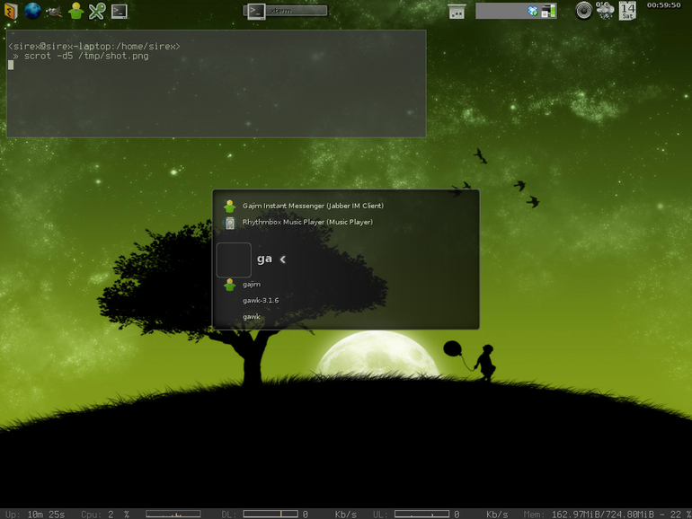
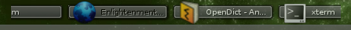
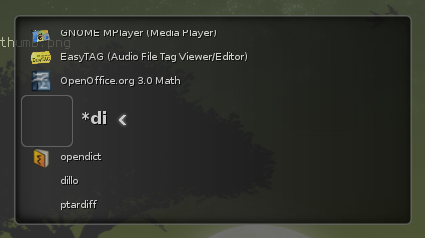
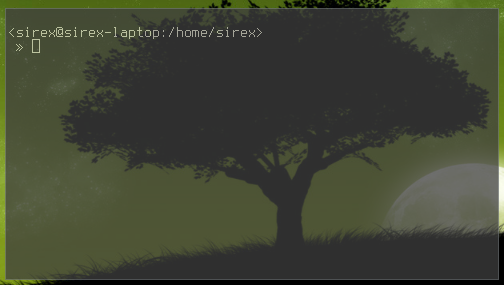

Enlightenment - Beauty at your fingertips
Šis blogo įrašas bus apie Linux langų valdytojus.
Ilgą laiką naudojau Fluxbox langų valdytoją. Tačiau prieš kelias dienas nusprendžiau dar kartą išmėginti mistiškąjį E17. Prieš pradedant apie jį, trumpai apie tai, kuo man neįtiko Fluxbox.
Fluxbox trūkumai¶
Man patinka Fluxbox minimalistinis stilius, tačiau mažiau, nereiškia greičiau. Nors pats Fluxbox yra labai nedidelis, tačiau lygiai taip pat jis neturi ir jokių priemonių, kurios užtikrintų greitą ir sklandų darbą grafinėje aplinkoje. Jei konkrečiai, bent jau man akivaizdžiai matomas Fluxbox lėto veikimo pavyzdys yra paprasčiausias šokinėjimas tarp langų. Pavyzdžiui, jei esu atsidaręs interneto naršyklę, o virš jos terminalą, tai paspaudus Alt+Tab, plika akimi matoma, kaip naršyklės langas paišo terminalo lango atidengtą vietą. Tai tik parodo, kad Fluxbox šioje ir panašiose vietose nenaudoja jokių optimizacijų.
Kitas bugas vėl gi yra susijęs su Alt+Tab. Nežinau dėl kokios priežasties, tačiau su naujausia Fluxbox versija, Alt+Tab man dažnai nesuveikia. Tiksliau lango fokusas kaip ir pasikeičia, sprendžiant iš užduočių juostos, tačiau patys langai neapsikeičia.
Ir paskutinis trūkumas – sisteminis trėjus. Jame karts nuo karto atsiranda naujų piktogramų, viena iš tokių – pranešimas apie naują laišką, kur visą laiką uždengia garso reguliavimo piktogramą. Tai reiškia, kad norėdamas pareguliuoti garsą, jei yra naujų laiškų, tai pirmiausiai turiu peržiūrėti naujus laiškus, o po to reguliuoti garsą… :)
E17 įspūdžiai¶
Tai ko gero yra pagrindiniai trūkumai, kurie pastūmėjo mane dar kartą išbandyti E17, kurį jau esu bandęs anksčiau ne vieną kartą. E17 mane sužavėjo nuo pačio pirmo išbandymo, tačiau taip gavosi, kad visais kartais neturėjau pakankamai laiko, kad išsiaiškinčiau kaip viskas veikia ir susikonfigūruočiau taip kaip man patinka. Todėl dažniausiai panaudojęs kelias dienas, neradęs to ko reikia grįždavau prie Gnome arba Fluxbox.
Šį kartą nusprendžiau nuodugniai išsiaiškinti kas prie ko ir štai rezultatas:
{kind=link}
E17 yra vis dar kūrimo stadijoje ir nėra išleista net Alpha laida. Tačiau nepaisant visko, E17 veikia ir jį galima naudoti.
Ko gero E17 labiausiai turėtu patikti tiems, kurie mėgsta įvairius gražius dalykėlius, nes tai yra viena iš pagrindinių E17 savybių – gražus darbo laukas. Kita taip pat labai svarbi savybė – greitis. Nors visi grafiniai elementai naudoja labai daug visokių efektų, tačiau bendrai viskas veikia tikrai greitai. E17 susikonfigūravau su įjungtu „compozite“ režimu, tai yra kažkas panašaus į tai, ką naudoja „compiz“. „compozite“ režimas, bent jau man, vizualiai suteikė dar daugiau greičio įspūdžio. Priešingai, lyginant su Fluxbox, E17 aplinkoje tikrai pastebimas labai sklandus ir gražus visų grafinių elementų veikimas. Langai persijunginėja gražiai ir glotniai.
Kitas džiuginantis reginys – elementų tarpusavio sąveika. Pavyzdžiui, kad ir užduočių juosta, jei joje yra labai daug užduočių ir jos visos netelpa, tai tiesiog vedžiojant pele palei juostos kraštus, pati juosta bėgioja ir pagal pelės poziciją pasislenka taip kaip reikia. Labai patogu.
{kind=link}
Programų paleidiklis¶
Fluxbox aplinkoje trūksta gero ir patogaus programų paleidiklio. E17 turi integruotą paleidiklį, kuris veikia labai greitai ir vizualiai atrodo labai gerai. Štai kaip jis atrodo iš arčiau:
{kind=link}
Sisteminis trėjus¶
E17 neturi jokio sisteminio trėjaus. Radau net gi paaiškinimą, kodėl jo nėra ir ko gero nebus:
„The Systray specification that somehow users seem to ask for and applications seem to use that is specified here primarily, is not as nice as you may think. It is in fact rather ugly and limited. It leads to awful interfaces and inconsistent behavior and display.“
rasterman.com adresu galima rasti detalesnį išaiškinimą, kodėl E17 sistemoje nėra realizuotas joks sisteminis trėjus.
Kad ir kaip ten bebūtų, kaip ir daugelis kitų E17 naudotojų aš taip pat panaudojau stalonetray, kuri puikiai atlieka savo darbą.
E17 lentynos ir conky¶
Jau anksčiau norėjau kur nors ekrano apačioje įmontuoti conky lango juostą, kurioje būtų rodomi sistemos parametrai. Su E17 lentynomis „shelves“, tai padaryti pavyko kuo puikiausiai! Pasižiūrėkite pagrindinėje ekrano nuotraukoje apačioje ir pamatysite kaip tai atrodo.
Langai ir jų rėmeliai¶
Jau minėjau užduočių juostą. Tai ji man pasirodė tokia patogi ir lanksti, kad nusprendžiau visai atsisakyti langų rėmelių, nes užduočių juosta rėmelių funkciją kuo puikiausiai pakeičia. Dabar darbo lauke yra daugiau vietos ir ypatingai terminalo langai atrodo labai stilingai… :)
{kind=link}
Išvados¶
Bent jau pirmas įspūdis yra labai teigiamas. E17 sukasi labai greitai ir sklandžiai. Tačiau jį naudoju dar labai trumpai, todėl žiūrėsiu kaip seksis ir su kokiomis problemomis susidursiu ateityje.